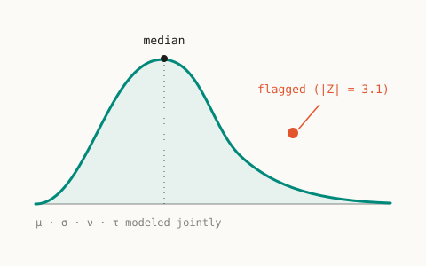
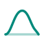
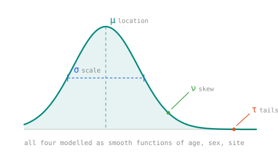
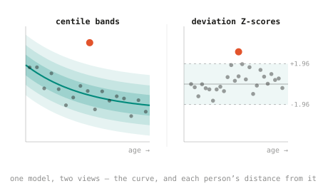
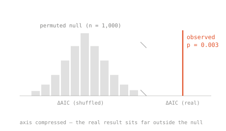
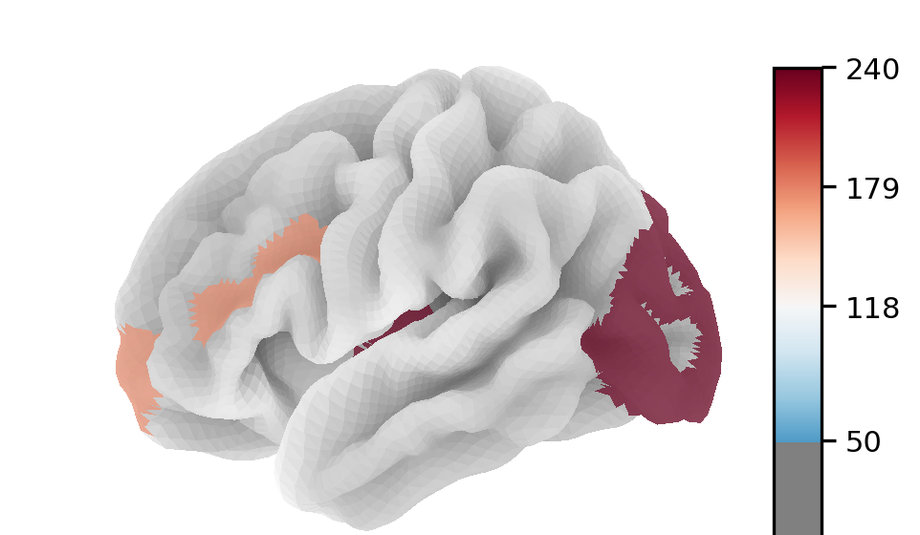
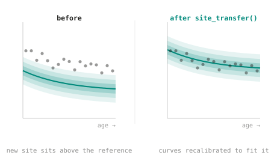
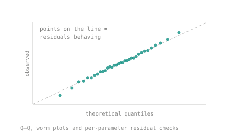

NormGAMLSS is a Python package for normative modeling with GAMLSS — fitting the full shape of your data (not just its average), transferring to new sites with minimal recalibration, and flagging true outliers with statistical rigor.

Developed and validated with the Laboratory for Mental Health Mapping — each modality backed by its own publication below.
Six of the things the package does, each shown with output from its own tutorial.







The same workflow behind every figure on this page.
# fit — location, scale, skew, kurtosis jointly model = Gamlss("m1", ["age","sex","site"], "thickness") model.fit(r_code="gamlss(y~pvc(age)+site, SHASH())", data=train) # reference curves + deviation scores z = model.z_score(test, train) model.plot_centiles(test, train) # adapt to a new scanner, no retraining adj = site_transfer(model, train, new_site)

Presented at OHBM 2026 (Jun 14–18). Status shown per paper — some are still in preparation.